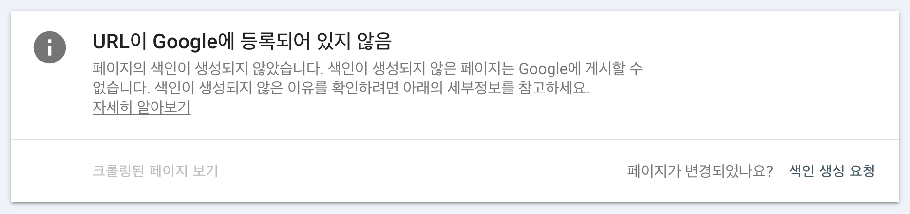

티스토리에서 피난한 Blogger에서 문제를 겪고 있다
기타
//
2025년 02월 12일 작성
한동안 티스토리와 GitHub Pages를 떠나 구글 Blogger에서 블로그를 운영하고 있었다. 그런데 최근 왜 이를 계속 운영해야 하나 위기를 느낄 정도의 문제가 발견되었다.
 문제의 스크린샷
블로그에 글을 올릴 때마다 매번 그 글의 인덱싱을 요청하고 있을 정도로 지극정성(?) 이었는데 구글에서 이를 거부하고 있다. 정확히는 리디렉션 오류가 발생해서 인덱싱을 하지 않는다는 게 맞겠지만 어쨌든 최종적으로는 거부라는 의미다.
결과적으로 최근 올리고 있는 모든 글들이 위처럼 인덱싱이 전혀 안 되고 있다. 구글은 블로그 트래픽의 핵심과도 같은 존재다. 하지만 이대로라면 구글의 트래픽 유입을 기대할 수가 없다. 치명적이다.
과연 어떻게 해야 될까? 다시 GitHub Pages로 돌아오는 게 합리적일까? 아니면 중요한 광고 자리를 내주고라도 티스토리로 돌아가는 게 맞을까?
모르겠다. 당분간 고민해 보자.